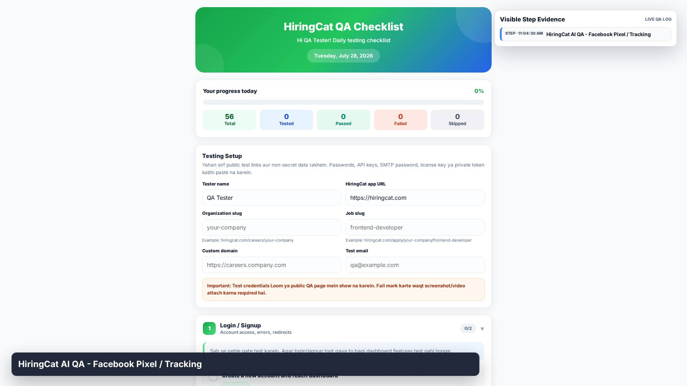
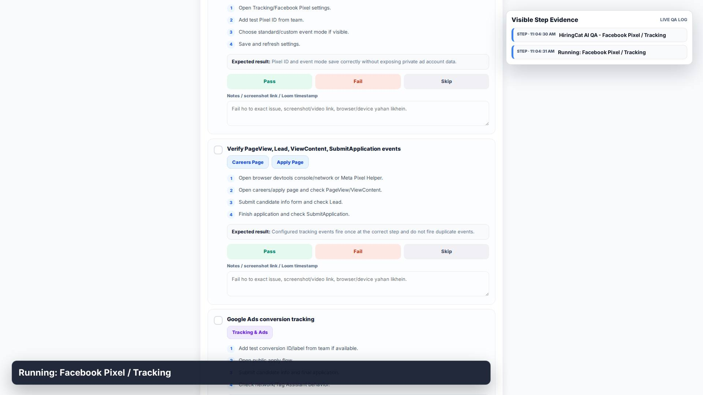
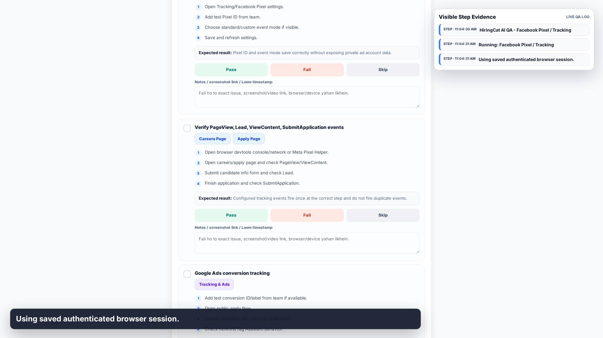
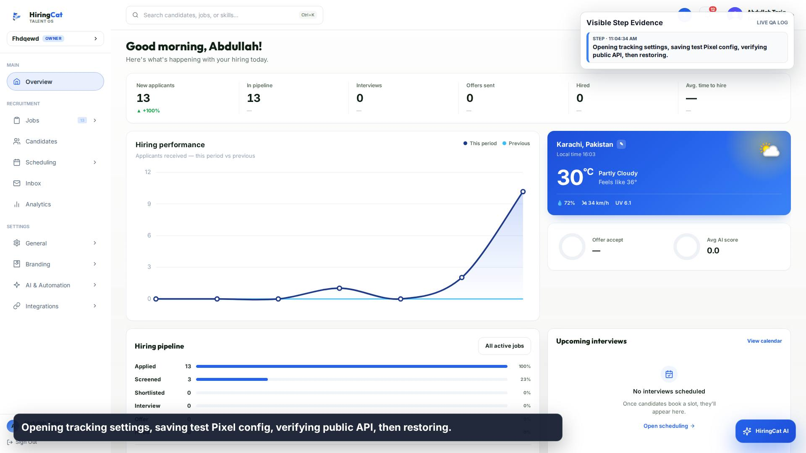
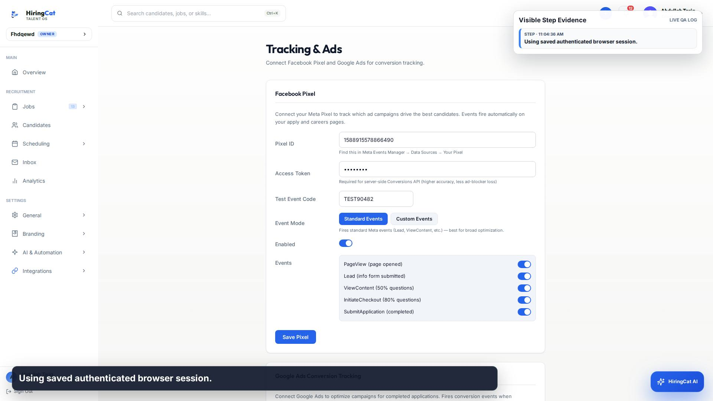
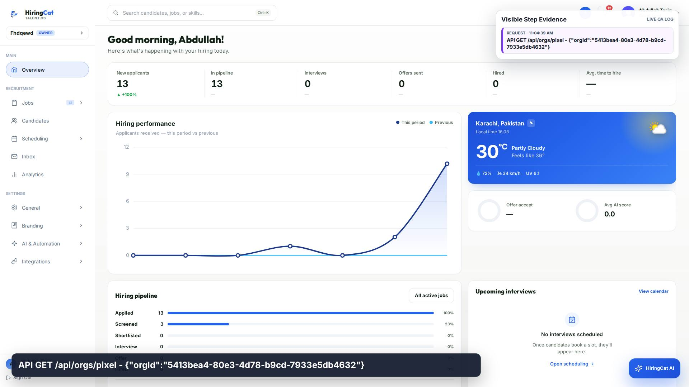
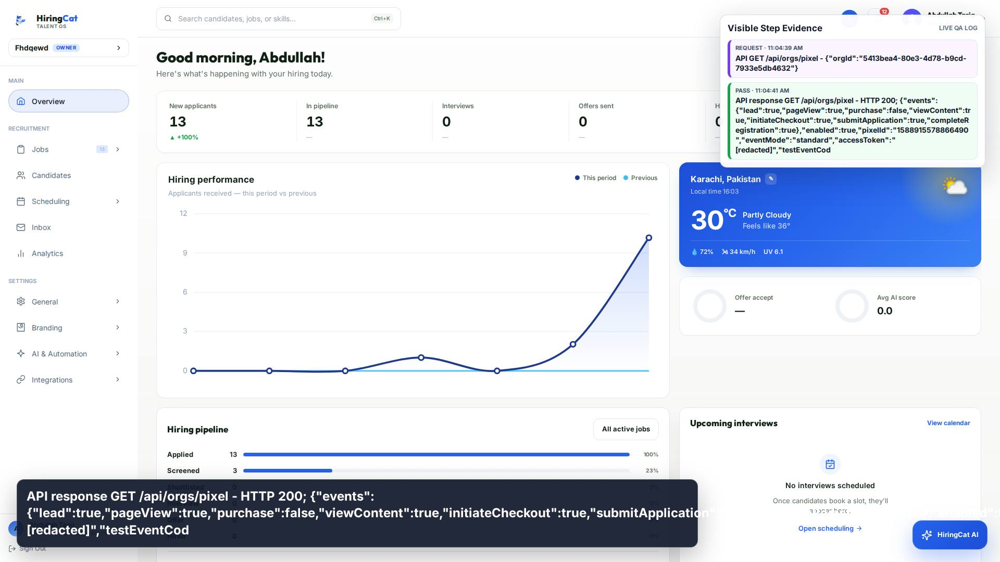
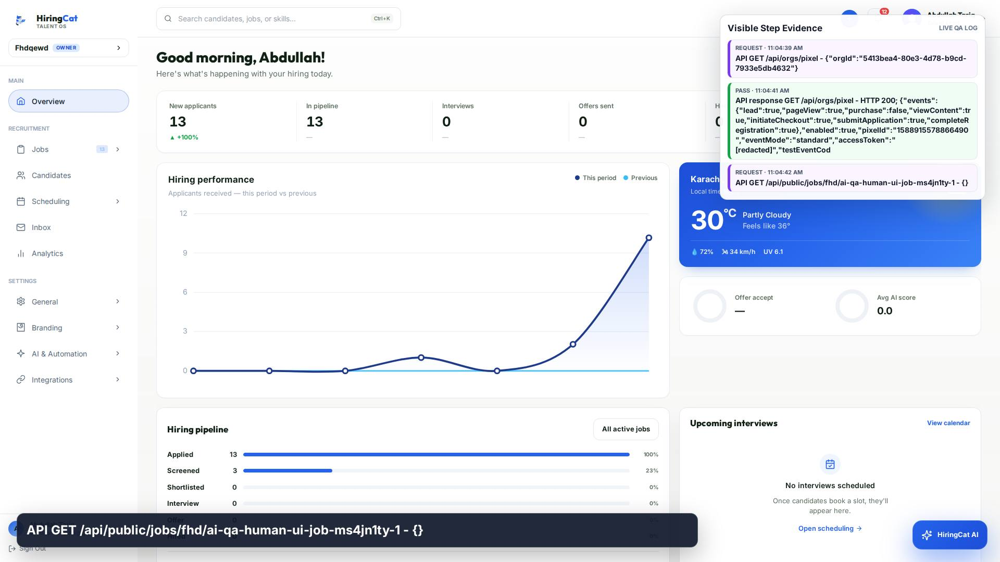
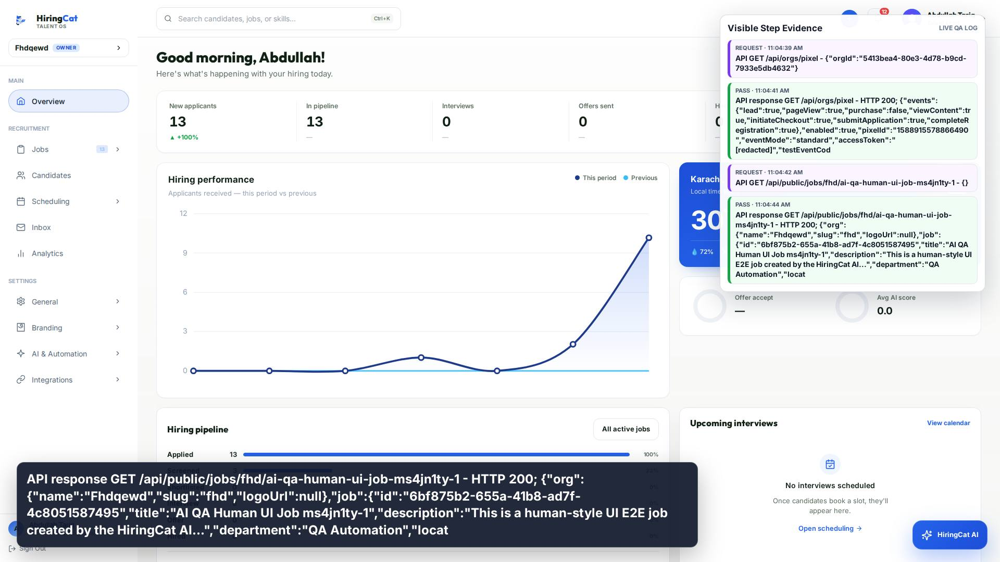
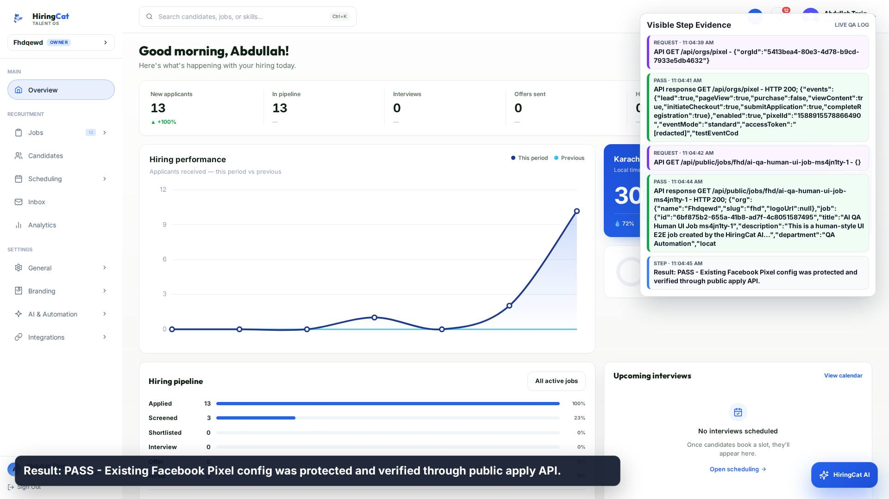

1. STEP
HiringCat AI QA - Facebook Pixel / Tracking

HiringCat AI QA - Facebook Pixel / Tracking

Running: Facebook Pixel / Tracking

Using saved authenticated browser session.

Opening tracking settings, saving test Pixel config, verifying public API, then restoring.

Using saved authenticated browser session.

API GET /api/orgs/pixel - {"orgId":"5413bea4-80e3-4d78-b9cd-7933e5db4632"}

API response GET /api/orgs/pixel - HTTP 200; {"events":{"lead":true,"pageView":true,"purchase":false,"viewContent":true,"initiateCheckout":true,"submitApplication":true,"completeRegistration":true},"enabled":true,"pixelId":"1588915578866490","eventMode":"standard","accessToken":"[redacted]","testEventCod

API GET /api/public/jobs/fhd/ai-qa-human-ui-job-ms4jn1ty-1 - {}

API response GET /api/public/jobs/fhd/ai-qa-human-ui-job-ms4jn1ty-1 - HTTP 200; {"org":{"name":"Fhdqewd","slug":"fhd","logoUrl":null},"job":{"id":"6bf875b2-655a-41b8-ad7f-4c8051587495","title":"AI QA Human UI Job ms4jn1ty-1","description":"This is a human-style UI E2E job created by the HiringCat AI...","department":"QA Automation","locat

Result: PASS - Existing Facebook Pixel config was protected and verified through public apply API.